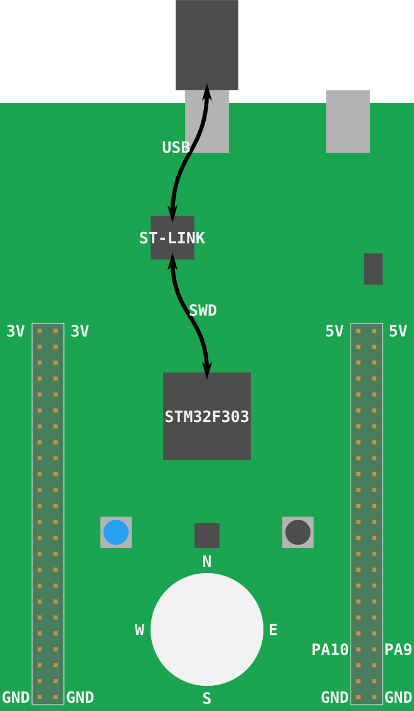

闪存
闪存是将我们的程序移动到微控制器（持久）存储器中的过程。一旦闪存，微控制器将在每次通电时执行闪存程序。
在这种情况下，我们的led-roulette程序将是微控制器存储器中的唯一程序。我的意思是，微控制器上
没有运行任何其他东西：没有操作系统，没有"守护进程"，什么都没有。led-roulette可以完全控制设备。
根据实际闪烁。我们需要做的第一件事是启动OpenOCD。我们在上一节中做过，但这次
我们将在临时目录(*nix上的/tmp; Windows上的%TEMP%)。
确保F3已连接到计算机，并在新终端中运行以下命令。
对于*nix & MacOS:
cd /tmp
openocd -f interface/stlink-v2-1.cfg -f target/stm32f3x.cfg
对于Windows注意：用C:替换实际的OpenOCD路径：
cd %TEMP%
openocd -s C:\share\scripts -f interface/stlink-v2-1.cfg -f target/stm32f3x.cfg
注意：较旧版本的开发板需要向
openocd传递稍微不同的参数。查看本节了解详细信息。
程序将阻止；保持终端打开。
现在是解释openocd命令实际作用的好时机。
我提到STM32F3DISCOVERY (又名F3) 实际上有两个微控制器。其中一个用作程序员/调试器。板上用作编程器的部分称为 ST-LINK (决定将其称为 STMicroelectronics)。该ST-LINK使用串行线调试（SWD）接口连接到目标微控制器 (该接口是ARM标准，因此您在处理其他基于Cortex-M的微控制器时会遇到它)。该SWD接口可用于闪存和调试微控制器。 ST-LINK连接到"USB ST-LINK"端口，当您将F3连接到计算机时，ST-LINK将显示为USB设备。

至于OpenOCD，它是一种软件，它在USB设备上提供一些服务，如GDB服务器，这些设备暴露了SWD或JTAG等调试协议。
转到实际命令：我们使用的.cfg文件指示OpenOCD查找ST-LINK USB设备(interface/stlink-v2-1.cfg)
并期望STM32F3XX微控制器(target/stm32f3x.cfg)连接到ST-LINK。
OpenOCD输出如下所示：
$ openocd -f interface/stlink-v2-1.cfg -f target/stm32f3x.cfg
Open On-Chip Debugger 0.10.0
Licensed under GNU GPL v2
For bug reports, read
http://openocd.org/doc/doxygen/bugs.html
Info : auto-selecting first available session transport "hla_swd". To override use 'transport select <transport>'.
adapter speed: 1000 kHz
adapter_nsrst_delay: 100
Info : The selected transport took over low-level target control. The results might differ compared to plain JTAG/SWD
none separate
Info : Unable to match requested speed 1000 kHz, using 950 kHz
Info : Unable to match requested speed 1000 kHz, using 950 kHz
Info : clock speed 950 kHz
Info : STLINK v2 JTAG v37 API v2 SWIM v26 VID 0x0483 PID 0x374B
Info : using stlink api v2
Info : Target voltage: 2.888183
Info : stm32f3x.cpu: hardware has 6 breakpoints, 4 watchpoints
"6个断点，4个监视点" 部分表示处理器可用的调试功能。
保持openocd进程运行，在上一个终端或新终端中确保您位于项目的确保您位于项目的src/05-led-roulette/目录中。
我提到OpenOCD提供了一个GDB服务器，所以我们现在就连接到它：
执行 GDB
首先，我们需要确定可以调试ARM二进制文件的gdb版本。
这可以是以下任意一个命令，请尝试每一个：
arm-none-eabi-gdb -q -ex "target remote :3333" target/thumbv7em-none-eabihf/debug/led-roulette
gdb-multiarch -q -ex "target remote :3333" target/thumbv7em-none-eabihf/debug/led-roulette
gdb -q -ex "target remote :3333" target/thumbv7em-none-eabihf/debug/led-roulette
失败案例e
如果远程调试后出现warning或error，您可以使用：Remote debugging using :3333检测失败情况：
$ gdb -q -ex "target remote :3333" target/thumbv7em-none-eabihf/debug/led-roulette
Reading symbols from target/thumbv7em-none-eabihf/debug/led-roulette...
Remote debugging using :3333
warning: Architecture rejected target-supplied description
Truncated register 16 in remote 'g' packet
(gdb)
成功案例
成功案例 1：
$ arm-none-eabi-gdb -q -ex "target remote :3333" target/thumbv7em-none-eabihf/debug/led-roulette
Reading symbols from target/thumbv7em-none-eabihf/debug/led-roulette...
Remote debugging using :3333
cortex_m_rt::Reset () at ~/.cargo/registry/src/github.com-1ecc6299db9ec823/cortex-m-rt-0.6.13/src/lib.rs:497
497 pub unsafe extern "C" fn Reset() -> ! {
(gdb)
成功案例 2：
~/embedded-discovery/src/05-led-roulette (master)
$ arm-none-eabi-gdb -q -ex "target remote :3333" target/thumbv7em-none-eabihf/debug/led-roulette
Reading symbols from target/thumbv7em-none-eabihf/debug/led-roulette...
Remote debugging using :3333
0x00000000 in ?? ()
(gdb)
在失败和成功的情况下，您应该在OpenOCD终端中看到新的输出，如下所示：
Info : stm32f3x.cpu: hardware has 6 breakpoints, 4 watchpoints
+Info : accepting 'gdb' connection on tcp/3333
+Info : device id = 0x10036422
+Info : flash size = 256kbytes
注意：如果您收到
undefined debug reason 7 - target needs reset之类的错误，您可以尝试monitor reset halt参考此处。
默认情况下，OpenOCD's 的GDB服务器侦听TCP端口3333 (localhost)。此命令正在连接到该端口。
更新 ../.cargo/config.toml
现在您已经成功地确定了需要使用的调试器，我们需要更改../.cargo/config.toml这样cargo run命令将成功。
注意：
cargo是Rust包管理器，您可以在这里阅读。
返回到终端提示符，查看../.cargo/config.toml：
~/embedded-discovery/src/05-led-roulette
$ cat ../.cargo/config.toml
[target.thumbv7em-none-eabihf]
runner = "arm-none-eabi-gdb -q"
# runner = "gdb-multiarch -q"
# runner = "gdb -q"
rustflags = [
"-C", "link-arg=-Tlink.x",
]
[build]
target = "thumbv7em-none-eabihf"
使用您最喜欢的编辑器编辑../.cargo/config.toml，以便runner程序行包含该调试器的正确名称：
nano ../.cargo/config.toml
例如，如果您的调试器是gdb-multiarch，那么在编辑git diff之后应该是：
$ git diff ../.cargo/config.toml
diff --git a/src/.cargo/config.toml b/src/.cargo/config.toml
index ddff17f..8512cfe 100644
--- a/src/.cargo/config.toml
+++ b/src/.cargo/config.toml
@@ -1,6 +1,6 @@
[target.thumbv7em-none-eabihf]
-runner = "arm-none-eabi-gdb -q"
-# runner = "gdb-multiarch -q"
+# runner = "arm-none-eabi-gdb -q"
+runner = "gdb-multiarch -q"
# runner = "gdb -q"
rustflags = [
"-C", "link-arg=-Tlink.x",
现在，您已经有了../.cargo/config.toml设置让我们使用cargo run来测试它，以启动调试会话。
注意：
--target thumbv7em-none-eabihf定义要构建和运行的体系结构。在我们的../.cargo/config.toml文件我们有target = "thumbv7em-none-eabihf"所以实际上不需要指定--target我们在这里这样做只是为了让您知道可以使用命令行上的参数，并且它们会覆盖config.toml文件中的参数。
cargo run --target thumbv7em-none-eabihf
结果如下：
~/embedded-discovery/src/05-led-roulette
$ cargo run --target thumbv7em-none-eabihf
Finished dev [unoptimized + debuginfo] target(s) in 0.01s
Running `arm-none-eabi-gdb -q ~/embedded-discovery/target/thumbv7em-none-eabihf/debug/led-roulette`
Reading symbols from ~/embedded-discovery/target/thumbv7em-none-eabihf/debug/led-roulette...
现在target remote :3333以连接到OpenOCD服务器并连接到F3:
(gdb) target remote :3333
Remote debugging using :3333
0x00000000 in ?? ()
好极了，我们将修改在future里的../.cargo/config.toml。但是由于该文件与所有章节共享，因此在进
行这些更改时应牢记这一点。如果您希望或我们需要进行仅与特定章节相关的更改，请创建一个在该章节目录本地的.cargo/config.toml
闪存设备
假设您正在运行GDB，如果没有按照上一节中的建议启动它。
现在使用gdb中的load命令将程序闪存到设备中：
(gdb) load
Loading section .vector_table, size 0x194 lma 0x8000000
Loading section .text, size 0x20ec lma 0x8000194
Loading section .rodata, size 0x514 lma 0x8002280
Start address 0x08000194, load size 10132
Transfer rate: 17 KB/sec, 3377 bytes/write.
您还将在OpenOCD终端中看到新的输出，例如：
Info : flash size = 256kbytes
+Info : Unable to match requested speed 1000 kHz, using 950 kHz
+Info : Unable to match requested speed 1000 kHz, using 950 kHz
+adapter speed: 950 kHz
+target halted due to debug-request, current mode: Thread
+xPSR: 0x01000000 pc: 0x08000194 msp: 0x2000a000
+Info : Unable to match requested speed 8000 kHz, using 4000 kHz
+Info : Unable to match requested speed 8000 kHz, using 4000 kHz
+adapter speed: 4000 kHz
+target halted due to breakpoint, current mode: Thread
+xPSR: 0x61000000 pc: 0x2000003a msp: 0x2000a000
+Info : Unable to match requested speed 1000 kHz, using 950 kHz
+Info : Unable to match requested speed 1000 kHz, using 950 kHz
+adapter speed: 950 kHz
+target halted due to debug-request, current mode: Thread
+xPSR: 0x01000000 pc: 0x08000194 msp: 0x2000a000
我们的程序已加载，让我们调试它！